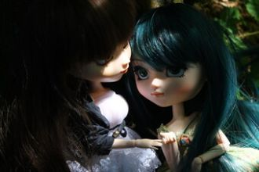
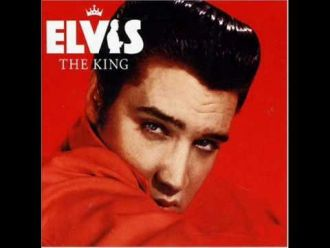
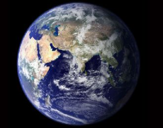
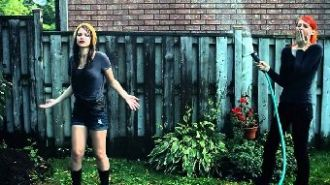

There ain`t nothing I can do Nothing I can say That folks criticize me But I`m gonna do just as I want to anyway

Давно прошла веселая пора.Все реже вижу я своих друзей.И пусть у всех заботы и дела -Чем старше дружба, тем она сильней.

A little less conversation, a little more action pleaseAll this aggravation ain't satisfactioning meA little more bite and a little less bark

What about sunriseWhat about rainWhat about all the thingsThat you said we were to gain...What about killing fieldsIs there a time
You're as cold as iceYou're willing to sacrifice our loveYou never take adviceSomeday you'll pay the price, I knowI've seen it before
Разгорелась ночка ярко. За зарницею зарница. От чего сердечку жарко. От чего душа томится? Будто споря с тишиною.
Geyinibsən al-əlvan, Budaqların çıraqban, Dövrə vurub qız-oğlan Nəğmə deyir şən yolka, Sən nə gözəlsən, yolka.
Qondu qar dənələrikipriyimə, qaşımaisti əlcək geyindim, papaq qoydum başımaYerin dörd övladı var Qışda boran, qar olar.
Korkmam kara gün kararık kalmaz bir yolunu buluruz güzel inceIşığından ne hayır gördük ki etmesin üstüme gölge gölge gölge
Beni bırakın, beni bırakın,Beni bırakın bu caddelerde.Yüreğim sokaklarda eskiyen taşlar gibi,Duruyorum, duruyorum..
Canım Sevmek Suçsa Seviyorum SeniAffet Beni, Affet Beni YanaklarımdanSüzülürken Aşk Öpme istersen, Öpme istersen
Yere göğe sığamadı, beni yine ıskaladı vahHedefini bulamadı on ikiden vuramadı aşkKöşe bucak kovaladı kıstıramádı gitti
Kaşların kara kara da amanın Leyla LeylaGözlerin derde çare de eyle yarim eyleSenin için yanarım da amanın Leyla Leyla
hıııgh hııghh hıııııııgh
tera husn bahut muzhe lu bhaatha hain.tera sunna ko jee chaahta hain.
Na day dil pardesi nuNTainu nit da roona pai jau ga

Sail!
This is how I show my love. Made it in my mind because Blame it on my ADD baby.
Ya, you never said a wordYou didn't send me no letterDon't think I could forgive youSee, our world is slowly dyingI'm not wasting no more time
DohDoh doh doh, doh doh doh, doh dohDoh doh doh, doh doh doh, doh dohDoh doh doh, doh doh doh, doh dohDoh doh doh, doh duh (Aaaaaaow!)
I'm hurting baby, I'm broken down I need your loving, loving I need it now When I'm without you I'm something weak
It's been a whileI know I shouldn't have kept you waitingBut I'm here now